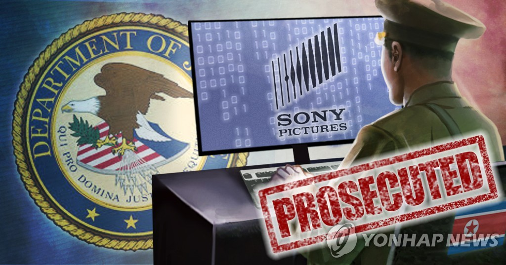
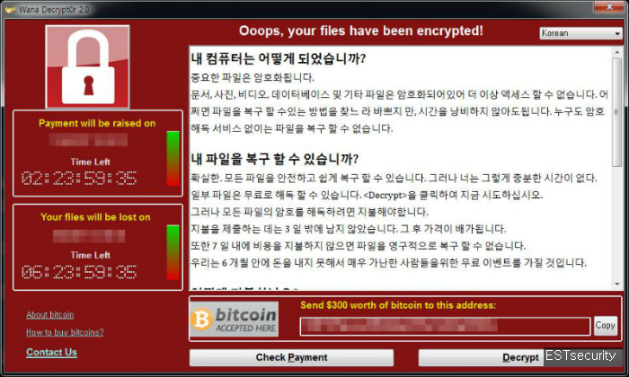
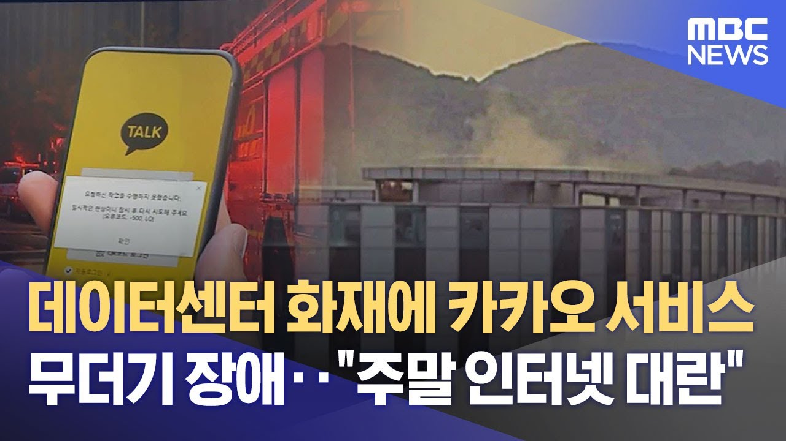

1. 소니 픽처스 해킹 사건 (2014)북한과 연관된 해커 그룹 “Guardians of Peace”가 소니 픽처스를 해킹한 사건입니다. |
|
2. 워너크라이 랜섬웨어 (2017)전 세계적으로 퍼진 랜섬웨어 공격으로, 윈도우의 보안 취약점을 이용해 확산되었습니다. |
|
3. 카카오 데이터센터 화재 (2022)카카오의 데이터센터에서 발생한 화재로 인해 주요 서비스가 전면 중단되었습니다. |
|